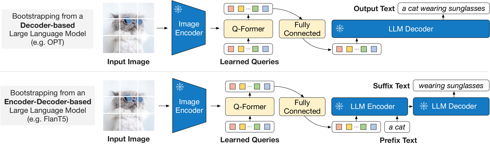
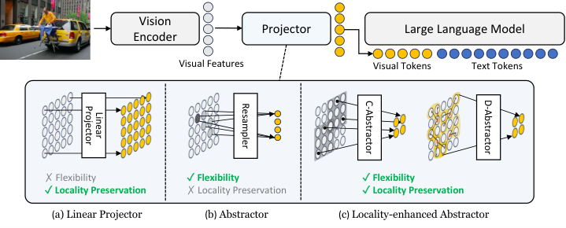
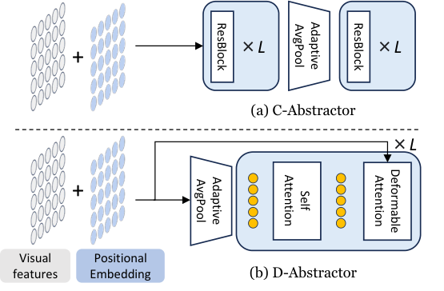

第 15 章 视觉—语言连接器设计
💡 本章导读
第 14 章的视觉编码器输出的是 $\mathbb{R}^{N\times d_v}$ 的特征矩阵，而第 17 章的语言模型吃的是 token 序列——连接器（Connector / Projector / Adapter）就是两者之间那座桥。这座桥看似只是"一层小模块"，却决定了三件事：模型能看多细（信息保真）、上下文还剩多少给文本（token 预算）、以及预训练要花多少钱（训练成本）。本章把 2022–2026 年出现的所有主流连接器放进同一个坐标系：可学习压缩（Q-Former、Perceiver Resampler、C-Abstractor）、确定性压缩（Pixel Shuffle、patch merge）、不压缩（Linear/MLP）、事后压缩（PruMerge、TokenPacker、FastV）、旁路融合（视觉专家、交叉注意力）。我们会完整拆解 Q-Former 的两阶段目标与数据流（本章重点 SVG），并用 MM1、Prismatic、Honeybee、Cambrian 四组系统性消融回答一个反直觉的结论：连接器往往是三要素中最不重要的一环——但选错方向会带来系统性伤害。读完本章，你应当能为自己的场景在 10 分钟内做出连接器选型。
1.问题形式化：从 N_patch 到 M token 的信息瓶颈
先把问题写清楚。给定图像 $\mathbf{x}$，视觉编码器（第 14 章）输出网格特征：
其中 $P$ 是 patch 大小（ViT 家族通常 14 或 16），$d_v$ 是特征维度（CLIP ViT-L 为 1024，SigLIP-SO400M 为 1152）。连接器是一个参数为 $\theta$、形状为 $N \to M$ 的映射：
产出的 $M$ 个视觉 token $\mathbf{Z} = [\mathbf{z}_1, \dots, \mathbf{z}_M]$ 被插入语言模型（LLM）的输入序列头部（第 13 章的 token 级融合），与 $L$ 个文本 token 一起参与因果注意力。整个 MLLM 的前向可以概括为 $\mathbf{y} = \mathrm{LLM}([\mathbf{Z}; \mathbf{T}])$。
为什么 $M$ 是核心变量？三个成本都随它线性或平方增长。（1）注意力计算：prefill 阶段的注意力 FLOPs 为 $O((M+L)^2 \cdot d)$，视觉 token 与文本 token 在同一个注意力矩阵里竞争；（2）KV Cache 显存：每张图的 KV 开销为
以 7B 模型（32 层、GQA 4 组、$d_{\text{head}}=128$、bf16）为例，$M=576$ 时单张图的 KV 约 1.2 MB——看似不大，但视频 16 帧、高分辨率 12 tile 场景下 $M$ 轻松上万，KV 与注意力立即成为瓶颈（第 39 章展开）；（3）上下文预算：LLM 的窗口长度是稀缺资源，$M$ 越大，留给多轮对话、系统提示与多图的空间越小。
📐 理论视角：信息瓶颈与率失真——token 预算是一种"码率"
连接器的形式化可以套用信息瓶颈（Information Bottleneck, IB）框架。设 $\mathbf{F}$ 是视觉编码器输出、$\mathbf{Z}$ 是连接器输出、$\mathbf{Y}$ 是下游任务的监督信号（指令+回答）。IB 目标为：
$I(\cdot;\cdot)$ 是互信息，$\beta$ 控制"保留多少输入信息"的取舍：$\beta \to 0$ 时只保留与任务相关的最小摘要（适合字幕类任务，$M$ 可以很小）；$\beta$ 大时倾向保留全部细节（适合 OCR、定位、计数）。把 $M$ 看作码率（rate），率失真理论告诉我们：失真随码率下降而上升，且上升速度取决于信源的复杂度——一张纯色背景的产品图在 $M=32$ 时几乎无损，一张密集文档在 $M=32$ 时已面目全非。这解释了三个经验现象：（1）同样 32 个 token，BLIP-2 在 COCO 字幕上够用、在 TextVQA 上崩坏；（2）2024 年后模型不约而同把"动态 token 数"（随图像复杂度伸缩）当作关键能力；（3）在 $M \ge N$ 的直通区间，"失真"下界为零，此时连接器的职责从"压缩"退化为"翻译"（把 $d_v$ 维特征变换到 LLM 残差流可读的表示，即第 10 章 modality gap 的弥合）。另一个关键洞察：LLM 的自注意力本身就是一个强大的" learned 压缩器"——每个视觉 token 仍会参与后续所有层的注意力，非关键信息可以在深层被注意力稀释。所以"压缩发生在连接器（输入端、硬性丢信息）"还是"发生在 LLM 内部（深层、软性丢信息，如推理期剪枝 FastV）"是一个真正的设计自由度，第 6 节会展开。$\blacksquare$
2.线性投影与两层 MLP：LLaVA 的极简主义
2023 年 4 月，LLaVA（arXiv:2304.08485）给出的连接器朴素得令人发笑：一层线性映射 $\mathbf{W} \in \mathbb{R}^{1024 \times 4096}$，把 CLIP ViT-L/14 的 576 个网格特征逐点投到 Vicuna 的词嵌入维度——$M = N = 576$，不压缩、不学习 query、不引入任何跨 token 计算。半年后 LLaVA-1.5（arXiv:2310.03744）只做了两处架构改动：图像从 224px 提到 336px（仍是 576 token）、线性层换成两层 MLP（Linear→GELU→Linear）。就是这套"最简配置"，在 11 个基准上同时超过当时所有精心设计的连接器方案（Q-Former 系的 InstructBLIP-13B、MiniGPT-4，cross-attention 系的 OpenFlamingo），并在 MME、MMBench 等榜单保持开源第一梯队。这个结果迫使我们认真回答：为什么"什么都不做"反而是最优的？
四个原因的合力。（1）任务不需要压缩：MLLM 的旗舰任务是视觉对话与推理，单张图 576 token 的上下文代价可接受——压缩的收益（省预算）小于代价（丢信息）。（2）空间对应关系是免费的结构先验：1:1 直通保留了 patch 的二维网格位置，LLM 的自注意力可以利用"相邻视觉 token 语义相近"的归纳偏置做局部聚合；而 resampler 把空间结构搅乱后，LLM 必须从乱序 token 里重建布局（Honeybee 的空间探针实验直接证实了这一点，见第 4 节）。（3）压缩可以外包给 LLM：几十层 Transformer 的自注意力天然在做"信息聚合"，连接器里的一个小 Q-Former（12 层、188M 参数）在表达能力上毫无优势，还平白增加训练难度。（4）连接器不是能力瓶颈：LLaVA-1.5 的提升主要来自数据配方与分辨率（第 16 章），架构上"把简单的事情做对"即可。Prismatic（arXiv:2402.07865）与 MM1（arXiv:2403.09611）的大规模消融都支持同一结论：连接器设计对最终性能的影响远小于视觉编码器与图像处理策略（第 8 节）。
| 配置 | LLaVA v1（2023.04） | LLaVA-1.5（2023.10） | 改动目的 |
|---|---|---|---|
| 视觉塔 | CLIP ViT-L/14，224px | CLIP ViT-L/14-336px | 每 patch 信息量提升，OCR 类任务受益 |
| token 数 N | 576（24×24 网格） | 576（24×24 网格） | 分辨率提升但 patch 变大，token 数不变 |
| 连接器 | 单层 Linear（1024→4096） | 两层 MLP + GELU | 非线性提升表达；成本几乎为零 |
| 压缩 | 不压缩（M=N=576） | 不压缩；HD 版外挂 grid 切块 | 对话任务不需要；细节靠分辨率 |
| 阶段 1 数据/学习率 | 558K 字幕对，lr 2e-5 | 558K 字幕对，lr 1e-3（全新 MLP） | 新初始化的 MLP 需要大学习率收敛 |
| 阶段 2 | 158K GPT-4 指令，解冻 LLM | 约 665K 混合指令数据，lr 2e-5 | 数据配方是真正的"魔力"（第 16 章） |
代码 1：最小 MLP 连接器与张量形状流动——亲手确认"576 进 576 出"的形状变换，这是所有后续连接器的对照基线：
import torch
import torch.nn as nn
from transformers import CLIPVisionModel
class MLPConnector(nn.Module):
"""LLaVA-1.5 式连接器：逐 token 投影，M = N，不引入跨 token 计算"""
def __init__(self, d_vision=1024, d_llm=4096):
super().__init__()
self.proj = nn.Sequential(
nn.Linear(d_vision, d_llm), # 1024 -> 4096
nn.GELU(),
nn.Linear(d_llm, d_llm), # 4096 -> 4096
)
def forward(self, feats): # feats: [B, N, 1024]
return self.proj(feats) # [B, N, 4096]
vision = CLIPVisionModel.from_pretrained("openai/clip-vit-large-patch14-336")
img = torch.randn(1, 3, 336, 336) # 预处理后的图像张量
out = vision(pixel_values=img).last_hidden_state
feats = out[:, 1:, :] # 丢弃 CLS token，保留网格特征
print("编码器输出:", feats.shape) # [1, 576, 1024]（24×24 网格）
conn = MLPConnector(d_vision=1024, d_llm=4096)
z = conn(feats)
print("连接器输出:", z.shape) # [1, 576, 4096]
# 下一步：z 直接与文本词嵌入 embed_tokens(input_ids) 在序列维拼接，
# 作为 LLM 输入的第一个"视觉前缀"（第 13 章 token 级融合）
embeds = torch.randn(1, 12, 4096) # 假设 12 个文本 token
llm_inputs = torch.cat([z, embeds], dim=1) # [1, 588, 4096]
print("LLM 输入序列:", llm_inputs.shape)⚠️ 陷阱：MLP 直通的三个翻车场景
极简连接器有明确的适用边界，以下三种场景必须换方案或加补丁。（1）多图/视频：16 帧 × 576 token ≈ 9200 token，一个 batch 十几张图就吃掉全部窗口与 KV 预算——视频模型（如 LLaMA-VID、Qwen2-VL）都内建了压缩机制。（2）超高分辨率：4K 图像按 336px 网格直通需要数百个 tile、数万 token——必须配合 AnyRes 切块 + tile 级压缩（第 5 节）。（3）纯文本能力回归：视觉前缀过长时，短文本任务的注意力被稀释，部分工作观察到"图像 token 稀释文本性能"的现象——控制 $M$ 与数据配比（多模态：文本约 1:1 甚至文本更多）是缓解手段。另外注意阶段 1 只训新 MLP 时学习率必须给大（LLaVA-1.5 用 1e-3），否则投影学不动、阶段 2 会被迫用 LLM 硬扛对齐，表现为输出与图像弱相关的"漂亮废话"。
3.Q-Former 全解：BLIP-2 的两阶段可学习压缩
Q-Former（Querying Transformer）出自 BLIP-2（arXiv:2301.12597，ICML 2023），是"可学习压缩"路线的标志性设计，也是很多面试题的常客。它的出发点与 LLaVA 不同：BLIP-2 的目标是在完全冻结视觉塔与 LLM 的前提下完成对齐（2023 年初 7B LLM 全参微调对多数团队仍昂贵），既然两个大塔都冻住，中间就必须有一个足够"聪明"的模块承担全部翻译与压缩工作。

结构与参数。Q-Former 是一个 12 层、768 维、约 188M 参数的小型 Transformer，权重从 BLIP 的文本编码器（BERT-base）初始化，与 CLIP 的 576 个网格特征交互。它的输入有两支：32 个可学习 query 向量（$32 \times 768$，随机初始化）与文本 token 的词嵌入。32 个 query 在每层做自注意力互相通信，并每隔一层通过交叉注意力（Cross-Attention，KV 来自图像特征）从视觉编码器取信息；文本嵌入与 query 共享自注意力层，但图像特征只能通过交叉注意力进入。输出固定为 32 个 768 维向量——无论输入图像多大，$M$ 恒为 32，压缩率高达 18:1（576→32）。

阶段 1：表示学习三目标（视觉塔冻结、文本塔用 BERT 权重）。BLIP-2 在 129M 图文对上联合优化三个目标，每个目标用不同的注意力掩码控制 query 与文本的交互程度：
① ITC（image-text contrastive，图文对比）：对齐"图像摘要"与"文本摘要"。关键细节是单模态化——query 不允许通过注意力看到文本（掩掉 query→text 的自注意力），文本也不允许看到 query，两侧各自独立编码后做批内对比。这样避免信息泄漏（否则模型学会"互相抄答案"，对比目标失效）。② ITM（image-text matching，图文匹配）：二分类判断图文是否配对，此时允许 query 与文本双向注意力（融合交互），并用 ALBEF 式的困难负样本挖掘（hard negative mining）提升判别难度。③ ITG（image-grounded text generation，图像条件文本生成）：以图像为条件生成文本（类似 captioning），query 对文本单向可见（文本的每个位置可以交叉注意到 query，但 query 看不到文本），因果掩码保证自回归。ITG 迫使 32 个 query 学会"装下"生成文本所需的全部视觉信息——这是三个目标中唯一直接服务于"压缩"的。
阶段 2：生成式桥接到冻结 LLM。阶段 1 学到的 32 个输出向量经一个全连接层（768→LLM 维度）作为软提示前缀送入 LLM：decoder-only（OPT）直接把 32 个向量拼在文本嵌入前面，优化条件生成损失；encoder-decoder（FlanT5）则把 Q-Former 输出接到编码器输入端。训练时冻结 LLM，只更新 Q-Former 与全连接层。最终 BLIP-2（ViT-g + FlanT5XXL）在零样本 VQAv2 达到 65.0，零样本 COCO 字幕超过同期模型，而可训练参数只有 188M。

下面是本章的重点：把 Q-Former 一个训练步的完整数据流画出来（以阶段 1 的 ITM 目标为例，掩码切换的思想贯穿三个目标）。
📄 论文精读：BLIP-2（ICML 2023，arXiv:2301.12597）
一句话贡献：证明"冻结两个大塔 + 轻量桥接"是可行的——188M 可训练参数即在零样本 VQAv2 达到 65.0，比 Flamingo-80B 少 54 倍可训练参数还更高。三个值得记住的设计决策：（1）BERT 初始化——Q-Former 从 BLIP 文本编码器继承权重，等于自带图文对齐先验，从零初始化的 Q-Former 收敛显著更慢；（2）32 个 query 的容量选择——论文消融显示 8→32 query 收益明显、32→64 增益趋平，作者选择了任务容量的下界（后续 Honeybee/MM1 的分析表明这个下界对细粒度任务是致命的）；（3）三目标掩码共享——用掩码而非三个模型实现 ITC/ITM/ITG，训练效率高，但也把三种异质目标的梯度冲突引入同一组参数。阅读建议：重点读 Figure 2（掩码设计）与 Table 12（query 数消融）；阶段 2 只有一个生成损失，与阶段 1 的多目标形成鲜明对照——这个"先表示、后生成"的分阶段思想影响了后来几乎所有 MLLM 配方（第 35 章）。
⚠️ Q-Former 的失败分析：为什么 2024 年后它被边缘化
Q-Former 的落幕不是因为它"错"，而是四条结构性缺陷在高分辨率、细粒度时代集中爆发。（1）固定 M=32 摧毁空间布局：32 个槽位无法承载 576+ 个 patch 的二维结构，OCR、grounding、计数等需要精确定位的任务系统性掉分——Honeybee 用空间探针量化了这一点：resampler 类连接器在"判断两个物体相对位置"这类探针上显著弱于保局部性的连接器。（2）阶段 1 目标与最终任务错位：ITC/ITM/ITG 学到的是"字幕级摘要"，而产品最终要的是指令跟随对话——LLaVA-1.5 证明：跳过表示学习阶段、直接用高质量指令数据端到端调，性价比更高。（3）三目标梯度冲突与超参敏感：ITC 要求单模态、ITM 要求融合、ITG 要求因果，同一组参数在不同掩码下被拉向不同方向，训练对损失权重、数据采样比例敏感，复现门槛高。（4）LLM 端对齐负担重：32 个"黑箱软提示"对 LLM 是 OOD 输入，冻结 LLM 时只能靠指令微调解冻来补偿（InstructBLIP、MiniGPT-4 实际都解冻或 LoRA 了 LLM）——"全冻结"的卖点在实践里名存实亡。公允地说：Q-Former 的价值在于确立了"可学习 query 压缩"这一设计原语，其思想在 Perceiver Resampler（视频）、TokenPacker（粗到细注入）中仍以变体形式存在。
代码 2：从零实现一个最小 Q-Former（结构忠实于原设计，掩码简化为 ITM 全双向与 ITC 互不可见两档）：
import torch
import torch.nn as nn
class MinimalQFormer(nn.Module):
"""最小 Q-Former：自注意力与交叉注意力逐层交替，输出恒定 32 个向量"""
def __init__(self, num_queries=32, d=768, d_vision=1024, num_layers=12):
super().__init__()
self.queries = nn.Parameter(torch.randn(1, num_queries, d) * 0.02)
self.text_embed = nn.Linear(30528, d, bias=False) # 实践中直接用 BERT 词表嵌入
layer = nn.TransformerDecoderLayer(d_model=d, nhead=12,
dim_feedforward=3072, batch_first=True)
self.blocks = nn.ModuleList([
nn.TransformerDecoderLayer(d_model=d, nhead=12,
dim_feedforward=3072, batch_first=True)
for _ in range(num_layers)])
self.v2q = nn.Linear(d_vision, d) # 图像特征投影到 query 空间
def forward(self, img_feats, txt_ids_embed=None, mode="itm"):
# img_feats: [B, N, d_vision] 冻结视觉特征；mode 控制掩码
q = self.queries.expand(img_feats.size(0), -1, -1) # [B, 32, d]
kv = self.v2q(img_feats) # [B, N, d] 作为 K/V
if txt_ids_embed is not None:
t = self.text_embed(txt_ids_embed) # [B, L, d]
for blk in self.blocks:
# 1) query 自注意力：query 互相通信（ITC/ITG 下对文本部分掩蔽，此处以 ITM 为例）
q = self._self_attn_with_text(blk, q, t, mode)
# 2) query 交叉注意力：从图像特征取信息（Q=query, K/V=图像）
q2, _ = blk.self_attn(q, kv, kv, need_weights=False)
q = blk.norm2(q + blk.dropout2(q2)) # 简化：独立残差
return q # [B, 32, d] 固定长度输出
def _self_attn_with_text(self, blk, q, t, mode):
"""ITM：query 与文本双向注意力；ITC：互不可见（返回原 q）"""
if mode == "itc" or t is None:
return q
mem = t # query 作为 decoder 输入，文本作 memory
q2 = blk.self_attn(q, mem, mem, need_weights=False)[0]
return blk.norm1(q + blk.dropout1(q2))
m = MinimalQFormer()
img = torch.randn(2, 576, 1024) # 冻结 CLIP 特征，N=576
txt = torch.randn(2, 20, 30528) # 文本 one-hot 简化示意
out = m(img, txt, mode="itm")
print(out.shape) # torch.Size([2, 32, 768]) —— 与 N 无关
# 官方实现见 Salesforce/LAVIS 的 blip2_qformer；HF 里可用
# InstructBlipVisionModel / Blip2QFormerModel 查看带完整掩码的版本4.Perceiver Resampler 与 Honeybee 抽象器
Q-Former 的"固定长度压缩"思想还有一条更早的支流：Perceiver（arXiv:2103.03206，ICML 2021）提出的 latent array——用一组可学习潜向量通过交叉注意力"查询"任意长度的输入，输出长度恒等于潜向量个数。Flamingo（arXiv:2204.14198，2022）把它搬进多模态，成为 Perceiver Resampler：视觉编码器输出的时空特征网格（图像是 2D 网格，视频是 3D 网格）与一组可学习 latent 拼在一起做交叉注意力，输出固定 64 个 token——与输入分辨率和视频帧数无关。这个"与输入无关的定长输出"特性正是 Flamingo 处理交错图文视频序列所需要的：无论一段提示里有多少张图、多少帧视频，每段视觉输入都规整成 64 个槽位。

Perceiver Resampler 的实现非常干净（也是本章最适合动手复刻的模块）：
import torch
import torch.nn as nn
import torch.nn.functional as F
class PerceiverResampler(nn.Module):
"""Flamingo 式重采样器：M 个 latent 查询，输出与输入 token 数无关"""
def __init__(self, d_vision=1024, d=1024, num_latents=64, num_layers=6, num_heads=16):
super().__init__()
self.latents = nn.Parameter(torch.randn(1, num_latents, d) * 0.02) # 可学习查询
self.in_proj = nn.Linear(d_vision, d)
block = nn.ModuleDict({
"ln1": nn.LayerNorm(d), "attn": nn.MultiheadAttention(d, num_heads, batch_first=True),
"ln2": nn.LayerNorm(d), "ff": nn.Sequential(nn.Linear(d, d * 4), nn.GELU(),
nn.Linear(d * 4, d))})
self.blocks = nn.ModuleList([block for _ in range(num_layers)])
def forward(self, feats): # feats: [B, N, d_vision]，N 任意
x = self.in_proj(feats) # [B, N, d]
lat = self.latents.expand(x.size(0), -1, -1) # [B, M, d]
lat = torch.cat([lat, x], dim=1) # latent 与输入拼接（Flamingo 细节）
for b in self.blocks:
lat = lat + b["attn"](b["ln1"](lat), b["ln1"](lat), b["ln1"](lat))[0]
lat = lat + b["ff"](b["ln2"](lat))
return lat[:, :self.latents.size(1), :] # 只取前 M 个位置输出 [B, 64, d]
r = PerceiverResampler(d_vision=1024, num_latents=64)
print(r(torch.randn(2, 576, 1024)).shape) # torch.Size([2, 64, 1024]) 图像
print(r(torch.randn(2, 32*32*8, 1024)).shape) # torch.Size([2, 64, 1024]) 8 帧视频同样 64 个 token
# 参考：OpenFlamingo 官方实现 flamingo/perceiver_resampler.py 与上述结构一致Resampler 解决了"定长输出"，但同样继承了 resampler 族的通病：输出 token 之间没有保持输入的空间邻接关系。2023 年底的 Honeybee（arXiv:2312.06742，KAIST，CVPR 2024）给这条路线做了系统的"验尸报告"：作者设计了一组空间感知探针——把两幅图像分别送入模型，考察模型能否区分"同一物体在两图中的相对位置是否一致"（论文中的 AvgN 指标，用六个空间区对的平均准确率度量）。结果非常清晰：resampler 类连接器在空间探针上系统性劣于保留局部结构的连接器，即使后者只是简单的自适应池化（adaptive pooling）。也就是说，LLaVA 式直通连接器的空间理解优势，本质上来自"局部性"而非"不压缩"——只要压缩方式保住二维邻接结构，token 数减半甚至减更多也不伤空间能力。这正是 Honeybee 提出两个新抽象器的动机。

C-Abstractor（Convolutional Abstractor）：先自适应池化到目标 token 网格（如 576→144，即 24×24→12×12），再过若干个"Res-block"（卷积 + 残差 + 归一化）。卷积天然只在邻域内计算，输出每个 token 的感受野连续可控，局部结构是架构保证的。D-Abstractor（Deconvolutional Abstractor）：反其道而行——先用反卷积上采样（比如 2 倍），再卷积、再下采样回目标网格，用"上采样-精炼-下采样"的沙漏结构在压缩前给模型一次修复细节的机会。两者都把 $M$ 固定为超参数且保持 2D 网格形状，这是它们与 resampler 的根本区别。

Honeybee 的实验结论值得逐条记住：（1）在 token 数相同的前提下，C/D-Abstractor 在 MMBench、MM-Vet 等基准上稳定超过 resampler，空间探针优势尤其明显；（2）简单的"adaptive pooling + 少量卷积"就已经接近复杂抽象器——压缩模块的设计空间里，"保局部"比"多参数"重要得多；（3）固定 M 的抽象器让训练吞吐与显存可控（token 数可预先预算），工程上比"动态 N"友好。这套结论后来被 MM1 复验（MM1 直接采用 C-Abstractor 作为表现最好的连接器之一），也解释了为什么 2024 年后的高分辨率模型纷纷转向"池化/合并 + 轻量卷积或 MLP"的确定性压缩。
5.保留空间结构的确定性压缩：Pixel Shuffle 与 AnyRes
第 4 节的结论可以更激进一点：既然"保局部"是关键，那为什么不用零参数、零学习的确定性重排？Pixel Shuffle（像素重排）就是答案：把空间维度折叠进通道维度。设特征为 $\mathbf{F} \in \mathbb{R}^{C \times H \times W}$，比例 $r$ 的 pixel shuffle 定义为：
即每个 $r \times r$ 的空间邻块变成 $r^2$ 个堆叠的通道——token 数从 $HW$ 降到 $HW/r^2$（$r=2$ 时砍 4 倍），每个输出 token 依然对应一个连续的 2D 邻域，空间结构完好无损。代价是通道数暴涨 $r^2$ 倍，需要接一个线性层把它压回 $d_v$（这一层是唯一的新参数）。InternVL 系列（arXiv:2312.14238 起）把 pixel shuffle 用成了标配：448px 输入下 InternViT 输出 $32\times32=1024$ 个 patch，经 $r=2$ 的 pixel shuffle + MLP 变成 256 个 token；高分辨率场景按 tile 处理时每 tile 恒定 256 token，token 预算完全可计算。Qwen2-VL 的 patch merge 是同一思想的另一种写法：相邻 $2\times2$ patch 的嵌入拼接后过一层 MLP，同样是"空间折叠 + 线性压缩"。
import torch
import torch.nn as nn
class PixelShuffleConnector(nn.Module):
"""InternVL 式确定性压缩：空间 2x2 折叠进通道（r=2 时 token 减 4 倍）"""
def __init__(self, d_vision=1024, d_llm=4096, r=2):
super().__init__()
self.r = r
self.proj = nn.Linear(d_vision * r * r, d_llm) # 通道 r^2 倍 -> LLM 维度
def forward(self, feats): # feats: [B, C, H, W]，如 [B,1024,32,32]
B, C, H, W = feats.shape
r = self.r
x = feats.view(B, C, H // r, r, W // r, r) # 切成 r×r 邻块
x = x.permute(0, 2, 4, 1, 3, 5).contiguous() # [B, H/r, W/r, C, r, r]
x = x.view(B, H // r, W // r, C * r * r) # 邻块折叠进通道（space-to-depth）
x = x.view(B, (H // r) * (W // r), C * r * r) # 摊平成 token 序列
return self.proj(x) # [B, N/r^2, d_llm]
f = torch.randn(2, 1024, 32, 32) # InternViT 448px 输出的 1024 个 patch
conn = PixelShuffleConnector(d_vision=1024, d_llm=4096, r=2)
print(conn(f).shape) # torch.Size([2, 256, 4096])：1024 -> 256 token
# PyTorch 也提供现成算子：nn.PixelUnshuffle(r) 一步完成同样的空间折叠与 pixel shuffle 互补的是 token 数随分辨率伸缩的问题——这正是 AnyRes（动态分块）要解决的。LLaVA-1.5-HD / LLaVA-NeXT 的做法：把高分辨率图像切成若干 336×336 的 tile，每个 tile 独立过视觉塔 + MLP（各产 576 token），另加一个全局缩略图提供整体上下文，token 总量 = (tile 数 + 1) × 576，随图像复杂度自适应。AnyRes 严格说不是单一连接器，而是"连接器 + 分块调度"的组合拳，它把 token 预算从固定值变成可调度资源：简单图 1–2 个 tile、文档图 6–12 个 tile。LLaVA-OneVision（arXiv:2408.03326）进一步引入 Higher AnyRes（双线性插值上采样后切块），并把单图/多图/视频三类场景的视觉 token 上限统一设计（其论文 Figure 3 给出了各场景的 token 分配策略）。AnyRes 的完整机制、tile 调度与文档场景实践在第 22 章展开，这里记住它与连接器的关系：AnyRes 把"每 token 信息密度"交给压缩模块，把"总 token 数"交给调度策略——两者解耦后，连接器可以放心地选择简单方案。
💡 技巧：确定性压缩的超参经验值
Pixel shuffle / patch merge 的压缩比 $r$ 怎么选？经验法则：自然图像对话 $r=2$（4 倍压缩）几乎无损（InternVL 全系默认）；OCR/文档 $r=2$ 保底、配合 tile 数上调总预算（每 tile 256 token × 12 tile ≈ 3k）；视频 $r=2$ 起步、再叠加帧间稀疏采样（Qwen2.5-VL 对视频用窗口注意力 + 帧级 token 控制）。一个实用检查：压缩后把 token reshape 回 2D 网格做最近邻上采样可视化——如果缩略图里人眼已看不清文字，模型大概率也读不出来。另外，确定性压缩后接的线性层请用大学习率单独训练（同 LLaVA-1.5 阶段 1 的 1e-3 逻辑），它是新初始化参数。
6.Token 压缩：PruMerge、TokenPacker 与推理期剪枝
前两节的压缩发生在"进 LLM 之前"（连接器内），2024 年出现了一批"事后压缩"工作，把压缩时机往后挪，形成一条新的谱系轴：压缩发生在哪个阶段？
（1）连接器内学习压缩：TokenPacker（arXiv:2407.02392）。思路是"粗到细注入"：先用低分辨率网格（比如 16×16=256 个粗查询点）做查询，让每个粗点通过带位置先验的交叉注意力去聚合高分辨率特征中自己邻域内的细节——位置编码保证粗点只关注空间上对应的区域，而不是像 resampler 那样全局乱抓。输出即粗点数量（256 个），token 减少 75–89%，而空间能力因为"位置对齐的聚合"得以保留。它与 Honeybee 的区别在于：C/D-Abstractor 的压缩是"先降采样后精炼"（信息先丢后补），TokenPacker 是"先定槽位、再按位置装填"（每个槽位主动到高分辨率特征里取自己需要的）。
（2）连接器后、注意力前：LLaVA-PruMerge（arXiv:2403.15388）。不改变连接器，直接对 576 个直通 token 做"选择 + 合并"：按注意力分数（图像自注意力的显著性，或文本条件下的相关度）选出 Top-K 关键 token 保留，其余 token 按相似度加权合并到关键 token 上（可选再补少量随机 token 防止分布坍缩），随后仍走原 MLP。PruMerge 平均只用 5.5% 的视觉 token、PruMerge+ 用 25%，即可维持与 LLaVA-1.5 可比的性能——这组数字是"视觉 token 高度冗余"的直接证据：576 个 token 里真正被 LLM"看"的可能只有几十个。
import torch
import torch.nn.functional as F
@torch.no_grad()
def prumerge_select_and_merge(feats, keep_ratio=0.25, extra_random=8):
"""PruMerge 风格 token 压缩：显著性 Top-K 保留 + 相似度加权合并其余 token"""
B, N, d = feats.shape
k = max(1, int(N * keep_ratio))
# 1) 显著性打分：实践中用 CLIP [CLS] 对各 patch 的注意力，这里用范数+均值代理
score = feats.norm(dim=-1) # [B, N]
idx_top = score.topk(k, dim=-1).indices # [B, k] 关键 token 下标
key = torch.gather(feats, 1, idx_top.unsqueeze(-1).expand(-1, -1, d)) # [B, k, d]
# 2) 其余 token 按与关键 token 的余弦相似度加权合并
mask = torch.ones(B, N, dtype=torch.bool, device=feats.device)
mask.scatter_(1, idx_top, False) # 非关键 token
rest, rest_mask = feats[mask].view(B, N - k, d), idx_top
sim = F.cosine_similarity(rest.unsqueeze(2), key.unsqueeze(1), dim=-1) # [B, N-k, k]
merged = torch.einsum("bnk,bkd->bkd", sim, rest) / (sim.sum(-1, keepdim=True) + 1e-6)
key = key + merged # 合并信息注入关键 token
# 3) 可选：补少量随机 token 维持分布多样性（PruMerge+ 的做法）
rest_idx = (~mask.nonzero(as_tuple=False)[:, 1])
rand_pick = rest_idx[torch.randperm(rest_idx.numel())[:extra_random]]
extra = feats[:, rand_pick, :]
return torch.cat([key, extra], dim=1) # [B, k + extra, d]
feats = torch.randn(2, 576, 1024)
print(prumerge_select_and_merge(feats).shape) # torch.Size([2, 152, 1024])：576 -> 152
# 官方实现：github.com/42Shawn/LLaVA-PruMerge（含基于 [CLS] 注意力的打分版本）（3）LLM 内部推理期剪枝：FastV（arXiv:2403.06764）等。把压缩彻底推迟到 LLM 前向内部：FastV 的实证发现是——视觉 token 的注意力份额在浅层（约第 2 层之后）急剧衰减，大量视觉 token 在深层几乎收不到注意力。于是可以在第 $k$ 层（如第 2 层）之后，把注意力贡献低的视觉 token 直接丢弃，免掉它们后续所有层的计算与 KV。这类方法无需任何训练、与连接器正交、可叠加，是部署侧的免费午餐（第 39 章详述）。谱系总结：压缩时机越晚，信息丢得越"精准"（有 LLM 的注意力做证据），但省下的显存也越少（浅层 KV 已经付过钱）；压缩时机越早，省得越彻底，但只能靠启发式或预训练目标猜"什么是重要的"。三种时机不互斥，实践中常组合使用。
7.视觉专家与交叉注意力连接器
前面所有连接器都遵循"视觉 token 挤进语言序列"的单一通道。另一族设计让视觉信息走旁路：不占（或只占少量）序列位置，而是通过附加的跨模态模块在 LLM 内部注入。交叉注意力连接器的代表是 Flamingo 的 GATED XATTN-DENSE（第 13 章已详推：$\mathbf{y} = \mathbf{x} + \tanh(\alpha) \cdot \mathrm{XAttn}(\mathbf{x}, \mathbf{v})$，$\alpha=0$ 初始化保证训练起点等价于纯语言模型）、mPLUG-Owl 的视觉抽象器（visual abstractor：若干可学习 query 交叉注意力压缩视觉特征后，在 LLM 中以交叉注意力接入，配合 LoRA 微调 LLM 保护语言能力）与 Qwen-VL 的视觉解析器（visual resolver：在 LLM 的注意力组之间插入带 256 个可学习 query 的交叉注意力层）。视觉专家连接器的代表是 CogVLM（arXiv:2311.10782）：语言主干完全冻结，但给 LLM 的每一层加一组"视觉专家"参数——图像 token 的 QKV 投影与 FFN 使用独立于文本 token 的可训练矩阵，文本 token 走原冻结通路。这相当于"视觉 token 在语言模型体内长出一套平行的、逐层可训练的器官"，语言能力零损伤，而视觉通路获得与 13B 语言模型同深度的处理。
两族旁路方案的比较：交叉注意力连接器的优势是推理时视觉 KV 可与请求无关地复用（多轮对话只算一次视觉前向），且序列长度不被视觉 token 占用；劣势是每层都要付交叉注意力的计算、与"视觉 token 进序列"的生态不兼容（vLLM 等推理引擎的 prefix caching、varlen 打包都是为序列式输入设计的），而且 Flamingo 之后的复现普遍发现 cross-attention 方案在数据规模变大后追不上简单的序列式方案。视觉专家保留序列式输入的全部工程兼容性，代价是参数量与"模型有了两套人格"的复杂度。2024 年后新模型几乎清一色选择序列式直通——不是旁路错了，而是当数据足够大时，简单通道 + 端到端训练的扩展性更好；旁路的复用优势则在服务端被 prefix cache 部分替代。
🕰 历史脉络：连接器的四年演化（2022→2026）
2022：Flamingo 确立"冻结双塔 + Perceiver Resampler + 门控交叉注意力"的原型，80B 参数的 few-shot 时代。2023 上半年：BLIP-2 的 Q-Former 把桥接参数压到 188M，LLaVA 用单层 Linear + 指令数据走出第三条路，MiniGPT-4 证明"冻结 Q-Former + 只训线性层"也行。2023 下半年：InstructBLIP 给 Q-Former 注入指令感知，LLaVA-1.5 用两层 MLP + 数据混合横扫基准，Qwen-VL 把交叉注意力塞进 LLM 并引入动态分辨率雏形。2024：Honeybee 证伪 resampler、MM1 与 Prismatic 完成系统性消融，InternVL 把 pixel shuffle 变成高分辨率标配，TokenPacker/PruMerge/FastV 开辟压缩时机谱系，Qwen2-VL 的 NaViT 式原生动态分辨率 + patch merge 让"连接器"进一步退化成一个 MLP。2025–2026：Cambrian-1 的 SVA 聚合器与多编码器组合是"设计连接器"的最后一批重投入；Qwen3-VL、InternVL3.5 等新一代模型的标准答案趋于收敛——简单直连（MLP/merge）+ 原生动态分辨率 + token 压缩下沉到视觉塔内部（如窗口注意力合并），连接器作为独立研究对象的黄金年代落幕，其遗产（token 预算意识、局部性原则、压缩时机谱系）内化为所有模型的默认工程。
8.消融研究的共识：MM1、Prismatic、Honeybee、Cambrian
连接器领域最珍贵的资产不是某个具体模块，而是四组"控制变量实验"给出的可迁移结论。它们之所以可信，是因为都用同一套底座反复替换单一组件、在固定数据与评测下比较。
MM1（arXiv:2403.09611，Apple，2024）——最大规模的架构消融（模型 3B–30B）。核心结论按重要性排序：（1）图像编码器的设计与预训练 > LLM 的选择 > 连接器的设计——视觉侧换强塔带来的提升远大于换语言模型或连接器；（2）视觉 token 数量永远不嫌多：在所有配置下提高每图 token 数都带来单调收益（直到显存不允许），这直接否定了"32/64 token 足够"的定长压缩哲学；（3）连接器内部：C-Abstractor 略优于池化类与 resampler 类，但差距远小于"多给 4 倍 token"的收益；（4）数据侧：预训练混合字幕（约 45%）、OCR（约 15%）、知识类（约 20%）与纯文本（约 20%）的多任务配比优于单一字幕数据——数据配比对最终性能的影响同样大于连接器选择。Prismatic（arXiv:2402.07865，Stanford，2024）把 VLM 拆成"优化策略 / 图像处理 / 视觉表示 / 语言模型"四条设计轴逐一扫过，结论与 MM1 高度一致：图像处理策略（分辨率、tile 切分）与视觉表示 > 语言模型选择；其最亮眼的具体发现是双视觉塔融合（SigLIP 的语义特征与 DINOv2 的密集特征拼接）稳定优于任何单塔——视觉表示的"互补性"比"单塔最强"更重要。Prismatic 还确认：阶段 2 解冻 LLM 的优化策略显著优于冻结 LLM，进一步动摇"冻结大塔"信仰。

Honeybee（arXiv:2312.06742）的贡献是方法论层面：第一个把"空间理解"从端到端基准分数里拆出来单独度量（AvgN 空间探针），让连接器的局部性影响变得可测量——后续工作（如 Cambrian）直接沿用了这类探针。Cambrian-1（arXiv:2406.16860，NYU，2024）则站在"视觉中心主义"立场做了最后一次大规模连接器创新：提出 SVA（Spatial Vision Aggregator）——一组可学习的空间查询，与多个视觉编码器（SigLIP、CLIP、DINOv2、ConvNeXt）的多层中间特征做位置对齐的交叉注意力，逐层聚合后输出少量视觉 token。SVA 的独特点是"逐层接地（grounding in depth）"：聚合不只发生在最后一张特征图上，而是在 LLM 的多个深度反复与视觉特征对齐，缓解"一次性压缩后无法反悔"的问题。Cambrian-1 同时给出 SP（Spatial Probe）分数榜，显示 SVA + 多编码器组合在空间任务上显著领先同等规模的 LLaVA 式单塔——但代价是训练流程复杂度大增。2025 年之后的主流路线没有大规模跟进 SVA 式复杂聚合，而是选择了它诊断出的另一半答案：换更强、更高分辨率的视觉塔 + 原生动态分辨率。
| 研究 | 实验规模 | 关于连接器的核心结论 | 关于其他组件的结论 |
|---|---|---|---|
| MM1（2024） | 3B–30B，大规模混合数据 | C-Abstractor 类最优但差距小；token 数量是硬通货，越多越好 | 视觉编码器 > LLM > 连接器；数据配比（字幕/OCR/知识）影响巨大 |
| Prismatic（2024） | 7B 级，四设计轴扫描 | 连接器差异被视觉处理策略淹没；池化类即可用 | 双塔融合（SigLIP+DINOv2）最佳；阶段 2 应解冻 LLM |
| Honeybee（2023） | 3B 级，空间探针首创 | 保局部性是压缩的第一原则；resampler 空间能力系统性受损 | 固定 M 抽象器在吞吐与显存上工程友好 |
| Cambrian-1（2024） | 8B–34B，视觉中心评测 | SVA 逐层接地聚合 + 多编码器在空间任务领先；连接器可以"补救"视觉表示 | MLLM 是最好的视觉评测协议；数据质量（Cambrian-7M）是最大杠杆 |
把四张清单叠加，得到三条可写入工程手册的"公理"：公理一，视觉侧（编码器 + 图像处理 + token 数）决定能力上限，连接器决定你兑现了多少；公理二，压缩可以，但必须保局部性或带位置先验；公理三，若预算允许，双塔/多塔互补特征 + 简单直连，优于单塔 + 复杂连接器。
9.连接器对比大表与选型决策
| 连接器 | 代表模型 | M（336–448px 典型） | 信息保真/空间结构 | 训练成本 | 主要短板 | 适用场景 |
|---|---|---|---|---|---|---|
| 单层 Linear | LLaVA v1、MiniGPT-4（Q-Former 后接线性） | 576（=N） | 无瓶颈，位置结构完整 | 极低（阶段 1 仅此模块） | 无非线性，表达略弱 | 快速原型、算力受限 |
| 两层 MLP | LLaVA-1.5、ShareGPT4V、多数开源模型 | 576（=N） | 无瓶颈，位置结构完整 | 低 | 多图/视频 token 爆炸；高分辨率需外挂调度 | 单图对话/推理的事实标准 |
| Q-Former（32 query） | BLIP-2、InstructBLIP、MiniGPT-4 前身 | 32（18:1） | 差：空间布局丢失 | 高：三目标两阶段，超参敏感 | 细粒度/OCR 弱；复现难 | 预算极紧的"冻结双塔"；定长摘要任务 |
| Perceiver Resampler | Flamingo、IDEFICS、（变体用于视频） | 64（9:1） | 较差：全局 query 无位置先验 | 中 | 同上；视频帧数无关是其独门优势 | 视频/交错序列定长化 |
| C-Abstractor / D-Abstractor | Honeybee、被 MM1 采纳 | 可配置（如 144，4:1） | 好：卷积保证局部性 | 中 | M 固定后仍需外部分辨率调度 | 需要固定 token 预算的压缩 |
| Pixel Shuffle + MLP | InternVL 1.5/2/2.5/3 系 | 256/tile（4:1，r=2） | 极好：确定性空间折叠，零信息主观筛选 | 极低（一个线性层） | 压缩率固定为 r²；通道膨胀 | 高分辨率 tile 化模型标配 |
| patch merge（2×2→1） | Qwen2-VL / Qwen2.5-VL / Qwen3-VL | 随分辨率动态（每 2×2 patch 1 token） | 极好：本质是 space-to-depth | 极低 | 依赖原生动态分辨率基础设施 | 任意分辨率图像与视频 |
| TokenPacker（粗到细注入） | TokenPacker | 256（约 8:1） | 好：位置对齐的区域聚合 | 中低 | 粗点网格固定，极端宽高比受限 | 高分辨率下的强压缩 |
| PruMerge（选择+合并） | LLaVA-PruMerge | 约 32–144（5.5%–25%） | 中：显著性证据驱动 | 近零（可后挂于已训模型） | 依赖打分器质量；极端场景掉点 | 已训模型的低成本瘦身 |
| 交叉注意力（GATED XATTN） | Flamingo、mPLUG-Owl、Qwen-VL（resolver） | 0（不占序列）或 256（resolver query） | 中：逐层注入但无序列位置 | 高（每层加模块） | 与主流推理引擎生态不兼容；复现普遍追不上直连 | 多轮复用视觉前缀的服务端 |
| 视觉专家（逐层平行参数） | CogVLM、（思想影响 DeepSeek-VL） | 576 左右（走序列） | 好：token 进序列 + 逐层精炼 | 高（每层加专家，数十亿参数） | 参数/工程复杂；两套通路调试难 | 语言能力必须零损伤的场景 |
| SVA（空间聚合） | Cambrian-1 | 数百（多查询聚合） | 极好：逐层接地 + 多编码器 | 高 | 流程复杂；生态跟进少 | 多编码器组合、空间能力优先 |
🍳 实战配方：连接器选型决策树
第一步，数预算：任务里单请求最多几张图/多少帧？（1）单图对话：任何连接器都行，选两层 MLP（生态最成熟，微调工具链最全）。（2）多图/视频：先算 $M_{\text{总}}$ = 帧数 × 每帧 token，超 4k 就必须压缩——选 pixel shuffle/patch merge 打底，叠加 FastV；不建议新项目用 Q-Former/Resampler。（3）文档/OCR：分 tile + 每 tile 256 token（InternVL 式）+ 动态 tile 调度（AnyRes，第 22 章）。第二步，看数据：有百万级指令数据 → 简单连接器 + 端到端训练（第 16 章）；只有几十万 → 连接器选"零学习"的确定性压缩（少一个可学模块就少一分过拟合风险）。第三步，定冻结策略：语言能力是红线（如垂直领域客服）→ 参考 CogVLM 视觉专家或 LoRA 微调（第 36 章）而非全解冻；无红线 → 阶段 2 解冻 LLM（Prismatic 结论）。第四步，留后路：连接器做成可替换模块（输入 $N \times d_v$、输出 $M \times d$ 的纯函数接口），先用 MLP 跑通全链路，再 A/B 替换压缩模块——经验上 80% 的"连接器问题"最后被证明是数据或分辨率问题。
10.本章小结与自测
本章把连接器从"玄学小模块"还原为一组可计算的取舍：$N \to M$ 的压缩率决定 token 预算与信息保真的权衡；"可学习压缩"（Q-Former、Perceiver Resampler、C-Abstractor）、"确定性压缩"（Pixel Shuffle、patch merge）、"不压缩"（MLP 直通）、"事后压缩"（PruMerge、TokenPacker、FastV）与"旁路融合"（交叉注意力、视觉专家、SVA）五条路线各有明确的能力边界与失败模式。四组系统性消融给出的公理是：视觉侧决定上限、保局部性是压缩第一原则、简单直连在数据充足时扩展性最好。2026 年回望，连接器研究的黄金年代虽然落幕，但它留下的 token 预算意识已经渗透进视觉塔内部设计（窗口注意力合并）与推理系统（prefix cache、varlen）。下一章我们转向连接器的"另一半"——喂给它的指令数据是如何被制造出来的：视觉指令微调。
✏️ 自测（先作答，再看答案要点）
1. 设视觉塔输出 576×1024 特征，LLM 有 32 层、GQA 4 组、d_head 128、bf16。分别计算 M=576（MLP 直通）与 M=32（Q-Former）时每图 KV Cache 开销（只计视觉 token，不含文本）。
答案要点：每 token 每层 KV 元素数 $= 2 \times n_{\text{kv}} \times d_{\text{head}} = 2\times4\times128 = 1024$，bf16 下 2 KB。总开销 $= M \times n_{\text{layers}} \times 2\,\text{KB}$。M=576：576×32×2 KB ≈ 36.9 MB/图；M=32：约 2.1 MB/图，相差 18 倍——这正是 Q-Former 时代的省钱逻辑。但代价是空间结构丢失；2024 年后的折中是 pixel shuffle（M=144，约 9.2 MB/图）。
2. Q-Former 阶段 1 的三个目标分别用什么注意力掩码？为什么 ITC 必须让 query 与文本互不可见？
答案要点：ITC——query 与文本互相掩蔽（各自单模态编码后做批内对比）；ITM——query 与文本双向全可见（融合交互判别配对）；ITG——文本对 query 单向可见、自回归因果掩码。ITC 若允许互见，两侧可以交换内容信息"作弊"（表示已包含对方），对比损失退化为平凡解，学不到对齐。
3. Honeybee 的空间探针实验为什么能"判死刑"resampler？Pixel Shuffle 为什么能避免同样的命运？
答案要点：探针直接测量"模型能否分辨物体相对位置"这一与语言先验无关的能力，resampler 的全局 query 混合了跨空间距离的信息，输出 token 之间不再保序保邻接，探针得分系统性低。Pixel Shuffle 是纯重排：每个输出 token 恰好对应一个 $r\times r$ 连续邻块，空间结构是数学恒等的，压缩率再高也不破坏局部性。
4. MM1 与 Prismatic 都说"连接器最不重要"，那连接器研究还有意义吗？请给出两个依然重要的场景。
答案要点：（1）显存/上下文受限场景（多图、长视频、端侧），连接器是唯一能在"不重训视觉塔"前提下大幅省 token 的杠杆；（2）数据稀缺场景（领域适配只有小数据），复杂连接器多一分过拟合风险，此时"确定性压缩 + 简单投影"的选择本身就是连接器决策；此外语言能力红线场景（视觉专家/LoRA 旁路）仍需在连接器层面做架构设计。"不重要"的前提是"数据充足 + 单图任务"。
5. 你要给已有的 LLaVA-1.5-7B 加视频能力（16 帧），推理显存翻倍太多。给出至少两条不重训视觉塔的压缩组合，并说明各自压缩发生在哪一时机。
答案要点：（a）PruMerge 式显著性剪枝/合并——时机在连接器后，按注意力/范数把 576 token/帧 压到 ~144；（b）FastV——时机在 LLM 内部，第 2 层后丢弃低注意力视觉 token，省深层计算与 KV；（c）在连接器前做帧级均匀稀疏采样 + 相邻帧差分合并（时机最早，省得最多但最盲）。三者可叠加；(a)+(b) 是免训练的最稳组合。